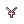

Angel Poring Boots and Heroic Capes
Below is a set of useful gears that can be purchased with Gold Coins.
Every piece of equipment can be equipped by any class at any level, making them consistently useful for brand new characters.
These gears provide a variety of bonuses such as experience boosts, after cast delay reduction, ATK/MATK boosts, and more.
Angel Poring Boots & Mask
Originally, theAngel Poring Boots had a single, non-removable card slot for the stones listed below. They also needed to be refined to +12 to obtain all of the effects from the slotted stone. We decided to change this locked-in slot into an enchant that CAN be changed into other stones. This way, a player can change the stone on their boots without having to refine another pair of boots to +9 to replace them.
The Angelic Cobbler Shortcut: @go woe can be found in Prontera Castle. Once through the front gates, head straight north into the banquet room. She can be found way in the back in the left corner.
Speak to her to purchase the following pieces of gear:
| Image | Name | Price | Description |
|---|---|---|---|
| Angel Poring Boots
|
45 Gold Coins | All stats + 1 Enables the use of Lv.1 Class : Shoes
| |
| Angelic Mask [1] | 875 Gold Coins |
+5% Experience gained when killing monsters. [+ If
|

Angel Poring Boots Enchants
Once you have the boots equipped, they can be enchanted with one stone at a time:
- Choosing Random Enchant costs 150 Gold Coins and 1,000,000z.
- Choosing Specific Enchant let's you choose which stone you want, at the cost of 2000 Gold Coins and 25,000,000z.
There is no way of resetting those enchants, but you are able to overwrite them with a new stone and there's no chance of failure.
| Leo Stone | |
|---|---|
|
STR + 1 [Refine >= 5] [Refine >= 7] [Refine >= 9] | |
| Capricorn Stone | |
|
AGI + 1 [Refine >= 5] [Refine >= 7] [Refine >= 9] | |
 Aquarius Stone Aquarius Stone
| |
|
VIT + 1 [Refine >= 5] [Refine >= 7] [Refine >= 9] | |
| Pisces Stone | |
|
INT + 1 [Refine >= 5] [Refine >= 7] [Refine >= 9] | |
| Scorpio Stone | |
|
DEX + 1 [Refine >= 5] [Refine >= 7] [Refine >= 9] | |
| Taurus Stone | |
|
LUK + 1 [Refine >= 5] [Refine >= 7] [Refine >= 9] |
Heroic Capes

The Heroic Tailor is located directly to the left of the Angelic Cobbler. He sells Heroic Capes, useful for acquiring After Cast Delay reduction and other stats on the garment slot early on.
Heroic Capes were originally Candy Bag Backpacks, but have been altered to have better benefits than their original counterpart. Heroic Capes require less refines for the garment to reach its full potential, going from +9 and +12 originally to +7 and +9 here, respectively.
The cost of one single cape is 50 Gold Coins.
| Image | Name | Description |
|---|---|---|
 Physical Heroic Cape [1] Physical Heroic Cape [1]
|
ATK + 1% every 2 refines. [Refine >= 7] [Refine >= 9] If Base level is lower than 100, increases EXP from monsters by 10%. Class: Garment | |

|
Ranged Heroic Cape [1] |
Increases Ranged Attack Damage by 1% every 2 refines. [Refine >= 7] [Refine >= 9] If Base level is lower than 100, increases EXP from monsters by 10%. Class : Garment |
| Magical Heroic Cape [1] |
MATK + 2% every 3 refines. [Refine >= 7] [Refine >= 9] If Base level is lower than 100, increases EXP from monsters by 10%. Class : Garment |
Heroic Cape Exchange
The Heroic Tailor can exchange your cape for a different type of cape.
- Give +9 Physical Heroic Cape [1]
- Receive +9 Ranged Heroic Cape [1].
The exchanged item keeps its refine levels and enchants. This process costs 150 Gold Coins and has zero chance of failure.
Heroic Cape Enchants
Once you have a Cape equipped, it can be enchanted with two random enchants for 750,000z. You can choose between Magical or Physical/Ranged. While they cannot be reset, you are able to overwrite them with two new ones.
This process has zero chance of failure.
| Physical / Ranged Enchant Possibilities | |
|---|---|
| First Enchant | Second Enchant |
|
|
| Magical Enchant Possibilities | |
|---|---|
| First Enchant | Second Enchant |
|
|
Heroic Rosary
Heroic Rosary can be bought at the Heroic Tailor NPC for 875 Gold Coins.
| Image | Name | Description |
|---|---|---|
|  Heroic Rosary |
+5% Experience gained when killing monsters.
[+ Magical Heroic Cape [1]] [+ Ranged Heroic Cape [1]]
Class : Lower Headgear |